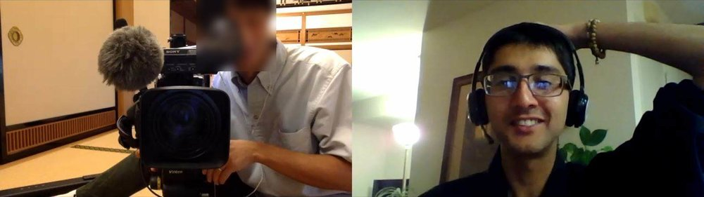

NHKでのZenITの放送
Wednesday, October 9, 2019
6:10 PM – 7:00 PM
日時
2019年10月9日（水）18:10～19:00の番組内 （NHK福井と金沢）
2019年10月10日（木）7:45～8:00（NHK福井、愛知県、静岡県、三重県、岐阜県、富山県、石川県）
詳細
NHKで働き方改革のテーマで放送する予定です。ZenITのシリコンバレー最先端のリモート（遠隔）作業仕方と曹洞宗禅の座禅の融合が放送されます。

リモートの撮影
Earlier Event: April 14
2019年4月14日（日）：禅ITプログラミング教室（初心者向け）
Later Event: December 15
2019年12月15日（日）：ZenITプログラミング教室（初心者向け）